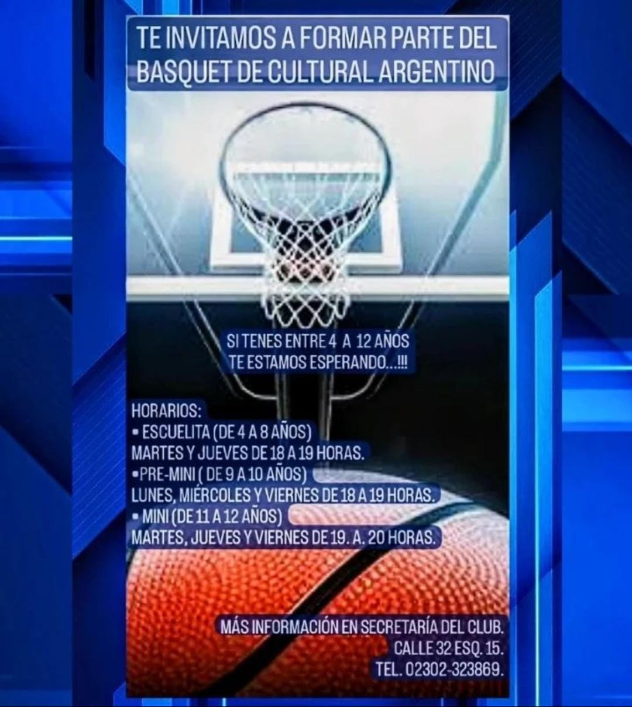
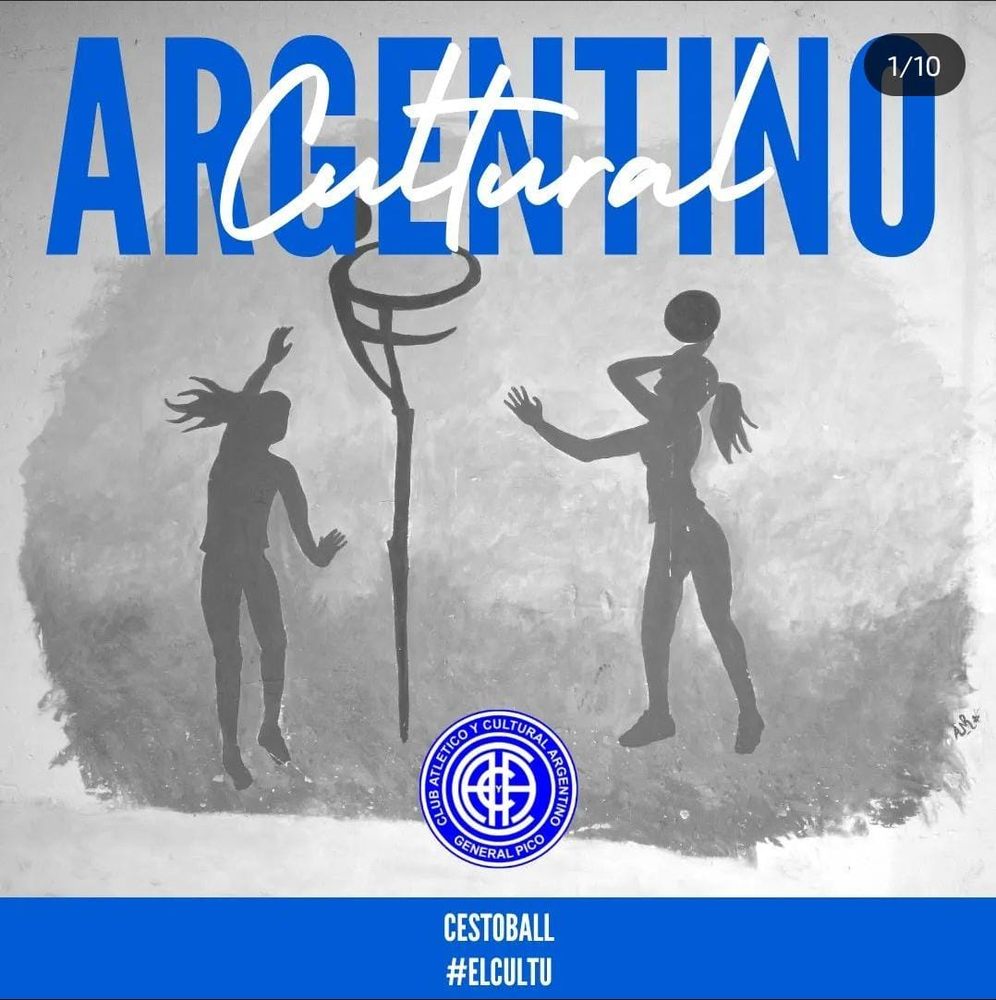
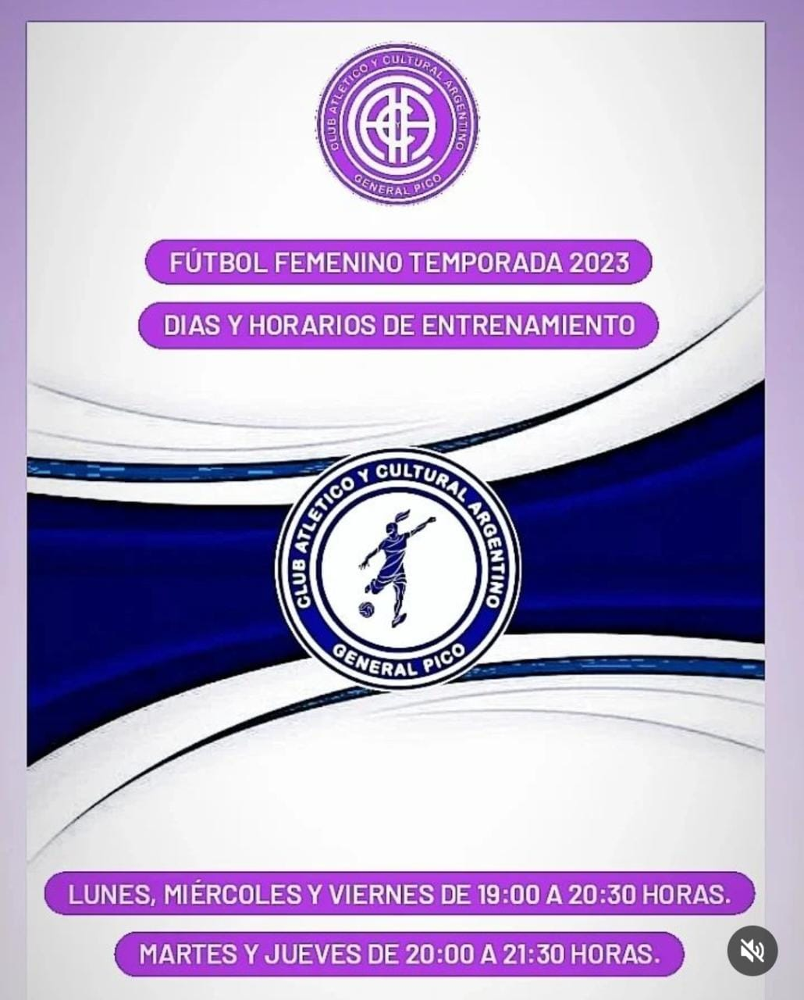
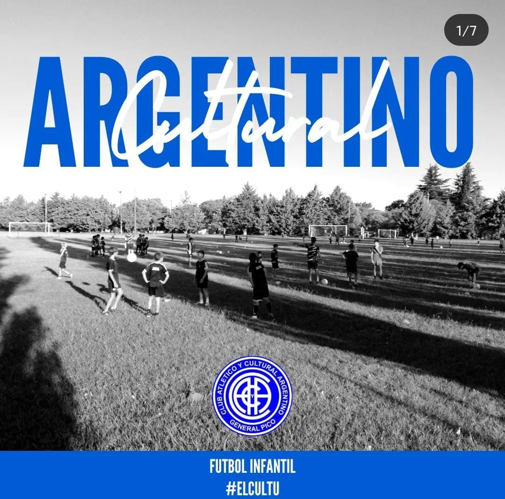
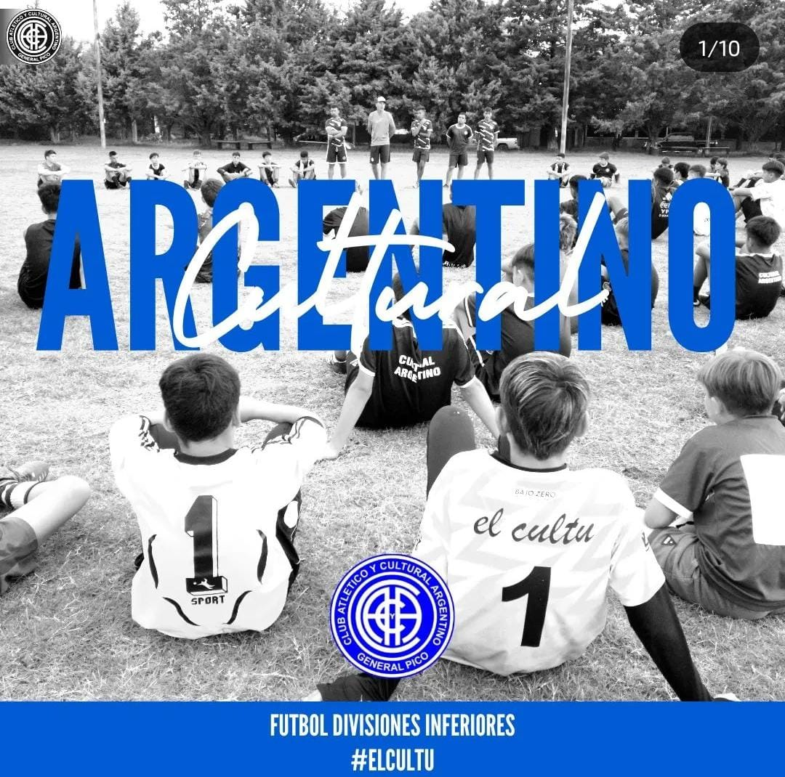
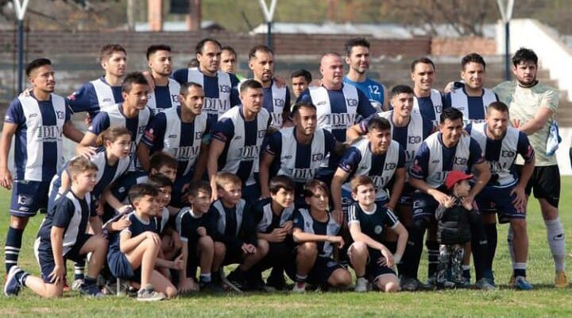

El 1 de Agosto del año 1920, nacia sobre la calle 32 n°750, el amado Club Atlético y Cultural Argentino, aquel que en el dia de su fundicación fue bautizado con el nombre de Football Club Argentino.
|  Basquet |  Cestoball |
|  Futbol Femenino |  Futbol Infantil |
|  Futbol Inferiores |  Futbol Primera |